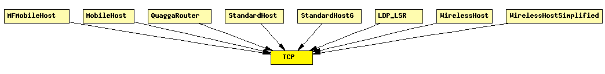

File: Transport/TCP/TCP.ned
C++ definition: click here
TCP protocol implementation. Supports RFC 793, RFC 1122, RFC 2001. Compatible with both IPv4 and IPv6.
A TCP segment is represented by the class TCPSegment.
Communication with clients
For communication between client applications and TCP, the TcpCommandCode and TcpStatusInd enums are used as message kinds, and TCPCommand and its subclasses are used as control info.
To open a connection from a client app, send a cMessage to TCP with TCP_C_OPEN_ACTIVE as message kind and a TCPOpenCommand object filled in and attached to it as control info. (The peer TCP will have to be LISTENing; the server app can achieve this with a similar cMessage but TCP_C_OPEN_PASSIVE message kind.) With passive open, there's a possibility to cause the connection "fork" on an incoming connection, leaving the original connection LISTENing on the port (see the fork field in TCPOpenCommand).
The client app can send data by assigning the TCP_C_SEND message kind and attaching a TCPSendCommand control info object to the data packet, and sending it to TCP. The server app will receive data as messages with the TCP_I_DATA message kind and TCPSendCommand control info. (Whether you'll receive the same or identical messages, or even whether you'll receive data in the same sized chunks as sent depends on the sendQueueClass and receiveQueueClass used, see below. With TCPVirtualDataSendQueue and TCPVirtualDataRcvQueue set, message objects and even message boundaries are not preserved.)
To close, the client sends a cMessage to TCP with the TCP_C_CLOSE message kind and TCPCommand control info.
TCP sends notifications to the application whenever there's a significant change in the state of the connection: established, remote TCP closed, closed, timed out, connection refused, connection reset, etc. These notifications are also cMessages with message kind TCP_I_xxx (TCP_I_ESTABLISHED, etc.) and TCPCommand as control info.
One TCP module can serve several application modules, and several connections per application. The kth application connects to TCP's from_appl[k] and to_appl[k] ports. When talking to applications, a connection is identified by the (application port index, connId) pair, where connId is assigned by the application in the OPEN call.
Sockets
The TCPSocket C++ class is provided to simplify managing TCP connections from applications. TCPSocket handles the job of assembling and sending command messages (OPEN, CLOSE, etc) to TCP, and it also simplifies the task of dealing with packets and notification messages coming from TCP.
Communication with the IP layer
The TCP model relies on sending and receiving IPControlInfo objects attached to TCP segment objects as control info (see cMessage::setControlInfo()).
Configuring TCP
The module parameters sendQueueClass and receiveQueueClass should be set the names of classes that manage the actual send and receive queues. Currently you have two choices:
It depends on the client (app) modules which sendQueue/rcvQueue they require. For example, TCPGenericSrvApp needs message-based sendQueue/rcvQueue, while TCPEchoApp or TCPSinkApp can work with any (but TCPEchoApp will display different behaviour with both!)
In the future, other send queue and receive queue classes may be implemented, e.g. to allow transmission of "raw bytes" (actual byte arrays).
The TCP flavour supported depends on the value of the tcpAlgorithmClass module parameters, e.g. "TCPTahoe" or "TCPReno". In the future, other classes can be written which implement New Reno, Vegas, LinuxTCP (which differs from others) or other variants.
Note that TCPOpenCommand allows sendQueueClass, receiveQueueClass and tcpAlgorithmClass to be chosen per-connection.
Notes:
Standards
The TCP module itself implements the following:
The TCPTahoe and TCPReno algorithms implement:
Missing bits:
TCPTahoe/TCPReno issues and missing features:
The above problems are relatively easy to fix, and will be resolved in the next iteration. Also, other TCPAlgorithms will be added.
Tests
There are automated test cases (*.test files) for TCP -- see the Test directory in the source distribution.
The following diagram shows usage relationships between modules, networks and channels. Unresolved module (and channel) types are missing from the diagram. Click here to see the full picture.
If a module type shows up more than once, that means it has been defined in more than one NED file.
| MFMobileHost | Models a mobile host with a wireless (802.11b) card in ad-hoc mode. This model contains the Mobility Framework's 802.11 implementation, Nic80211, and IP, TCP and UDP protocols. The mobility model can be dynamically specified with the mobilityType parameter. |
| MobileHost | Models a mobile host with a wireless (802.11b) card in ad-hoc mode. This model contains the new IEEE 802.11 implementation, Ieee80211Nic, and IP, TCP and UDP protocols. The mobility model can be dynamically specified with the mobilityType parameter. |
| QuaggaRouter | Quagga-based IP router. |
| StandardHost | |
| StandardHost6 | |
| LDP_LSR | An LDP-capable router. |
| WirelessHost | Models a host with one wireless (802.11b) card in infrastructure mode. This module is basically a StandardHost with an Ieee80211NicSTA added. It should be used in conjunction with WirelessAP, or any other AP model which contains Ieee80211NicAP. |
| WirelessHostSimplified | Models a host with one wireless (802.11b) card in infrastructure mode, but using a simplified NIC that does not support handovers. This module is basically a StandardHost with an Ieee80211NicSTASimplified added. It should be used in conjunction with WirelessAPSimplified, or any other AP model which contains Ieee80211NicAPSimplified. |
| Name | Type | Description |
|---|---|---|
| mss | numeric const | maximum segment size |
| advertisedWindow | numeric const | in bytes (Note: normally, NIC queues should be at least this size) |
| tcpAlgorithmClass | string | TCPTahoe/TCPReno/TCPNoCongestionControl/DumbTCP |
| sendQueueClass | string | TCPVirtualDataSendQueue/TCPMsgBasedSendQueue |
| receiveQueueClass | string | TCPVirtualDataRcvQueue/TCPMsgBasedRcvQueue |
| recordStats | bool | recording seqNum etc. into output vectors on/off |
| Name | Direction | Description |
|---|---|---|
| from_appl [ ] | input | |
| from_ip | input | |
| from_ipv6 | input | |
| to_appl [ ] | output | |
| to_ip | output | |
| to_ipv6 | output |
simple TCP parameters: mss: numeric const, // maximum segment size advertisedWindow: numeric const, // in bytes (Note: normally, NIC queues should be at least this size) tcpAlgorithmClass: string, // TCPTahoe/TCPReno/TCPNoCongestionControl/DumbTCP sendQueueClass: string, // TCPVirtualDataSendQueue/TCPMsgBasedSendQueue receiveQueueClass: string, // TCPVirtualDataRcvQueue/TCPMsgBasedRcvQueue recordStats: bool; // recording seqNum etc. into output vectors on/off gates: in: from_appl[], from_ip, from_ipv6; out: to_appl[], to_ip, to_ipv6; endsimple